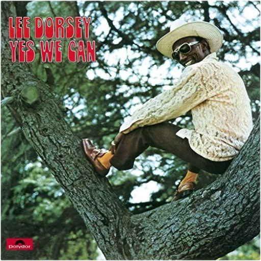

yes we canlee dorsey  Limited 180gm audiophile vinyl LP pressing. Lee Dorsey began his career as a lightweight boxer in the early 1950s and moved on to become an influential African American pop and R&B singer during the 1960s. His successful period began when he met songwriter and record producer Allen Toussaint. In 1970, Dorsey recorded the Yes We Can album again with Toussaint together with the support band The Meters. Several of the songs were covered by major artists who scored hits with them later that decade; 'Yes We Can' by The Pointer Sisters and 'Sneakin' Sally Thru The Alley' by Robert Palmer. The other songs are straight up funky tracks and have a variety of styles and sounds. Included are the protest soul recording 'Who's Gonna' Help Brother Get Further' and the somewhat hilarious comedy song 'Would You'. All in all it stands as a great soul album for that time.  the fellowship of the ringthe lord of the rings the fellowship of the ringthe lord of the rings Attendu depuis des années, la trilogie du Seigneur des Anneaux voit enfin le jour sous la houlette du metteur en scène Peter Jackson, aidé dans sa tâche par le compositeur Howard Shore. Spécialiste de musiques contemporaines, le musicien offre sa partition la plus symphonique et impose un style choral étonnant. Utilisant le langage codé inventé par l'auteur des romans, J.R.R.Tolkien, Howard Shore fait donner ses chœurs et embellit ses différents thèmes. S'éloignant de son style alternatif habituel, le compositeur de The Cell a écrit 17 morceaux, illustrant les 17 chapitres de l'acte 1 : La Communauté de L'Anneau. la partition de la bande originale excelle dans la narration et l'évocation de l'univers sombre de Tolkien. Peinture fortement obscure de l'Heroic-Fantasy, cette composition explore un territoire visuel sans aucune concession et lui applique une enveloppe sonore entièrement équilibrée entre un symphonisme "straussien" et une harmonie que l'on croise chez Stravinski. Véritable composition classique du XXIe siècle, cette partition s'écoute et se regarde, se déguste même tel un ballet ou s'affrontent le Bien et le Mal. Une œuvre déjà colossale et impressionnante comme J.R.R Tolkien l'aurait souhaitée. L'album termine sur le sublime "May It Be" de la chanteuse celte Enya, par ailleurs auteur du thème d'Aragorn et de Arwen. Indispensable ! —Didier Leprêtre  the two towersthe lord of the rings the two towersthe lord of the rings Après le succès public et critique de La Communauté de l'Anneau, Howard Shore se devait de persister dans sa vaste et sombre fresque pour chœur et orchestre, qui puise sa substance dans l'univers olympien de J.R.R Tolkien et se fond dans le visuel titanesque de Peter Jackson. Mieux encore, le compositeur s'élève un cran au-dessus, affinant son orchestration et amplifiant ses contrastes pour dévoiler le ciment de son œuvre. Les faiblesses du premier volet (thème de la Communauté, carences rythmiques…) s'effacent au profit d'une texture toujours aussi massive et ténébreuse, mais plus forte en nuances et en dynamiques, plus axée vers la sublimation que l'illustration. Le Seigneur des Anneaux selon Howard Shore se révèle enfin comme un trilogie majeure, un corps unique qui tire son énergie du chaos et s'illumine de suaves mélopées mystiques. Les Deux Tours fusionne le primitif et le merveilleux, navigue entre le Bien et le Mal avec une réussite qui promet un final d'anthologie. —Jean-Christophe Arlon  the return of the kingthe lord of the rings the return of the kingthe lord of the rings "La fin de toute chose" : tel est l'un des titres de cet album qui clôt dignement la vision du Seigneur des Anneaux selon Howard Shore. La fin ou presque, car on attend avec impatience les ajouts musicaux désormais traditionnels qui accompagnent la version longue en DVD, et surtout la promesse d'un coffret réunissant l'ensemble de la musique écrite pour ce triptyque cinématographique déjà mythique.  transformerlou reed transformerlou reed "Je fais du rock pour adultes." Si Lou Reed ne l'avait pas dit, on en douterait encore… Avec une vaste discographie, en solo ou avec le Velvet Underground, le comique troupier de Long Island, poète urbain au spectre vocal manichéen, aura psychanalysé ses amis, ses ennemis, ses femmes, ses hommes et, ce qui l'intéresse finalement le plus : lui. Aussi, lorsque l'essentiel Transformer sort fin 1972, le Lou est l'androgyne frère aîné d'un Ziggy Stardust terre-à-terre. Ce qui tombe plutôt bien, vu que David Bowie coproduit Transformer avec Mick Ronson qui sortira pour l'occasion ses guitares baroques toujours aussi inspirées : du glam new-yorkais, c'est nouveau, ça vient de sortir ! La légende raflera donc le riff de "Vicious", la beauté étoilée de "Satellite Of Love", la grandiloquence de "Perfect Day" et bien sûr la basse féline et le saxophone torride de "Walk On The Wild Side". Oubliée donc la mauvaise blague du premier album solo de metal progressif avec requins de studio, et retour à des considérations viscéralement plus décadentes. Avec Transformer, la collaboration Bowie/Reed fonctionne plutôt bien. La preuve, les deux hommes ne retravailleront jamais ensemble. —Marc Zisman |


 Made with Delicious Library
Made with Delicious LibraryNancy, State zipflap congrotus delicious library Thomas, Julien